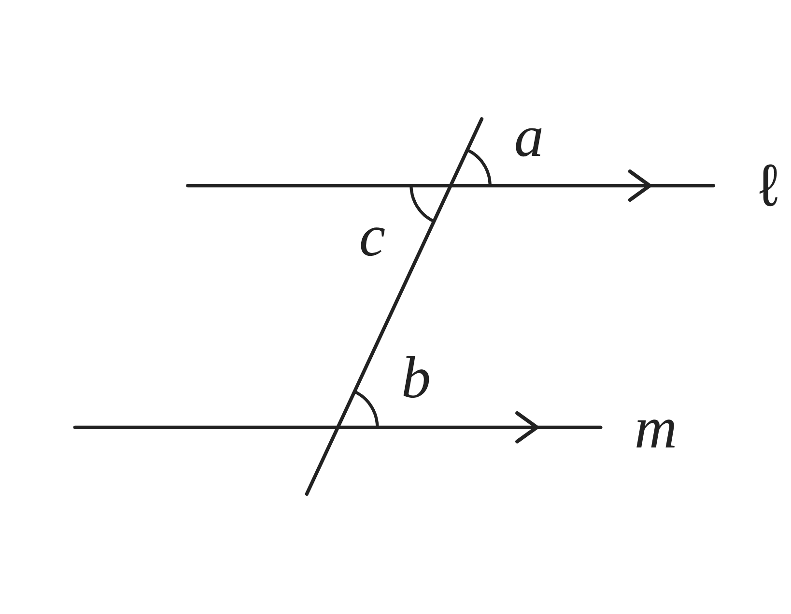
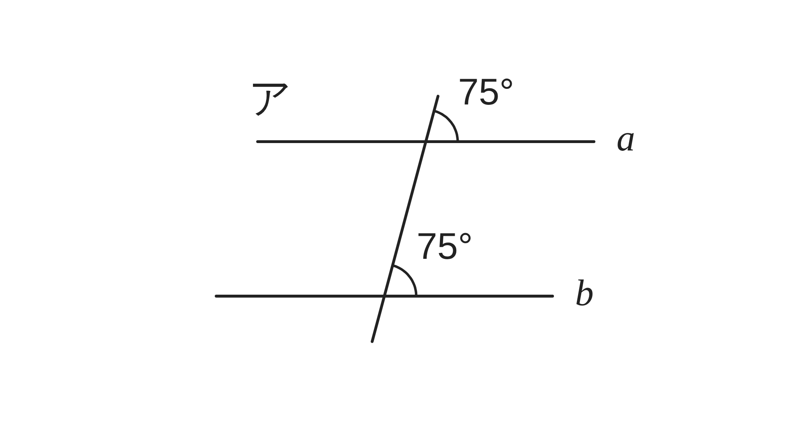
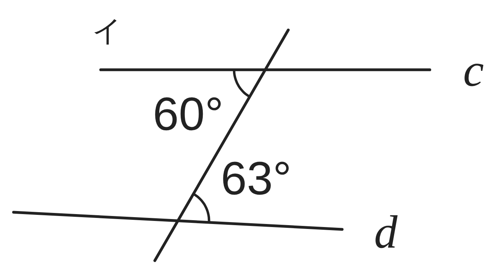
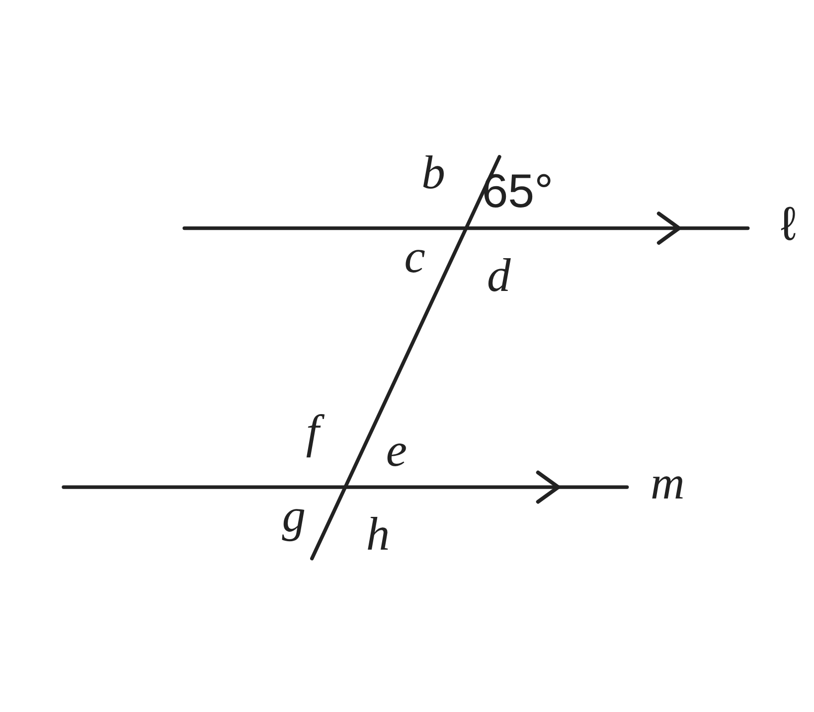

ペア学習
第2時 平行な2直線に1つの直線が交わると、角はどうなるだろう
前の時間の重要語句を、ペアで出し合おう
第1時の重要語句から、1人1問ずつ、言葉を選んで出題する。
聞かれた人は、その言葉の意味を、自分の言葉で言う。
対頂角
同位角
錯角
平行と合同 第2時 平行な2直線に1つの直線が交わると、角はどうなるだろう
めあて
第2時 平行な2直線に1つの直線が交わると、角はどうなるだろう
平行な2直線に1つの直線が交わると、角はどうなるだろう
学習課題
右の図で、ℓ∥m である。
∠a、∠b、∠c を、分度器ではかろう。
同位角 ∠a と ∠b、
錯角 ∠b と ∠c の大きさを、くらべよう。

はかった大きさを書こう。そのあと、気づいたことを、ペアで言い合おう。
平行と合同 第2時 平行な2直線に1つの直線が交わると、角はどうなるだろう
学習課題のまとめ
第2時 平行な2直線に1つの直線が交わると、角はどうなるだろう
【はかる】
∠a＝65°、∠b＝65°、∠c＝65°
【気づいたこと】
同位角 ∠a と ∠b は、等しい。
錯角 ∠b と ∠c も、等しい。
（平行な2直線では、等しくなる。）

平行と合同 第2時 平行な2直線に1つの直線が交わると、角はどうなるだろう
ことば
第2時 平行な2直線に1つの直線が交わると、角はどうなるだろう
【平行線の性質】
2直線が平行ならば、 は等しい。 も等しい。
【平行線になる条件】
2直線に1つの直線が交わるとき、 か が等しければ、
その2直線は である。
2直線 ℓ と m が平行であることを、ℓ∥m と書く。
平行と合同 第2時 平行な2直線に1つの直線が交わると、角はどうなるだろう
ことば
第2時 平行な2直線に1つの直線が交わると、角はどうなるだろう
【平行線の性質】
2直線が平行ならば、同位角は等しい。錯角も等しい。
【平行線になる条件】
2直線に1つの直線が交わるとき、同位角か錯角が等しければ、
その2直線は平行である。
2直線 ℓ と m が平行であることを、ℓ∥m と書く。
平行と合同 第2時 平行な2直線に1つの直線が交わると、角はどうなるだろう
例題
第2時 平行な2直線に1つの直線が交わると、角はどうなるだろう
下のア、イの図で、2直線は、それぞれ平行だろうか。
や の大きさに目をつけて、わけも答えよう。


平行と合同 第2時 平行な2直線に1つの直線が交わると、角はどうなるだろう
例題 解答
第2時 平行な2直線に1つの直線が交わると、角はどうなるだろう

ア … 同位角が 75° で
等しいから、
a∥b である。

イ … 錯角が 60° と 63° で
等しくないから、
c と d は平行ではない。
平行と合同 第2時 平行な2直線に1つの直線が交わると、角はどうなるだろう
考えよう
第2時 平行な2直線に1つの直線が交わると、角はどうなるだろう
右の図で、ℓ∥m である。∠a＝65° のとき、
ほかの 7つの角の大きさを、
分度器を使わずに求めよう。
同位角が等しいことをもとにして、
錯角も等しくなるのは、なぜだろう。
① ∠b〜∠h の大きさを、表に書こう。
② 気づいたことを書こう。
③ 錯角が等しくなるわけを、説明しよう。
（どの角とどの角が等しいか、図に印をつけて、
使った性質も書こう。）

発展
2直線 ℓ、m に直線が交わっていて、錯角が等しいとする。このとき、同位角も等しくなるだろうか。わけも考えよう。
平行と合同 第2時 平行な2直線に1つの直線が交わると、角はどうなるだろう
振り返り
第2時 平行な2直線に1つの直線が交わると、角はどうなるだろう
今日のめあて
平行な2直線に1つの直線が交わると、角はどうなるだろう
平行
平行線の性質
平行線になる条件
今日わかったことを、ペアで1つずつ言い合おう。
ワークシートと演習プリントを出そう。（未完成でも出す）
平行と合同 第2時 平行な2直線に1つの直線が交わると、角はどうなるだろう